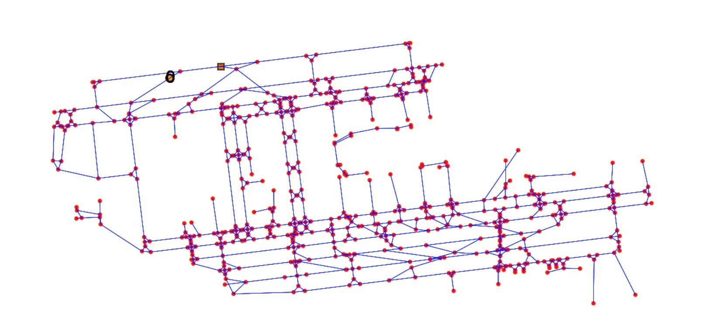

Professional Experience
Controls Intern — Magna International
May 2024 – Mar 2025 | Troy, United States
- Developed OTA update architecture for containerized bots using a cloud-managed FMS.
- Designed data/video logging pipeline deployed as a Blackbox system.
- Created ROS2 packages to convert CAN signals to custom messages.
- Configured modems, routing, and static IPs; updated teleoperation APIs.
- Integrated corrected GNSS data over SPI with RTCM messages via ROS.
Autonomous delivery robot developed by Magna for last-mile delivery solutions.
Graduate Researcher — LATTICE (Airport Airside Project)
Jan 2024 – Apr 2024 | Ann Arbor, United States
- Modeled LAX as a weighted graph to simulate multi-agent pathfinding.
- Implemented CBS with A* and conflict tree for realistic airport routing.
- Incorporated time and path constraints for real-world simulation fidelity.
Looping simulation preview of pathfinding in LAX (GIF-style)
Graph-based representation of LAX airport layout (LAX.png)
Mechatronics Intern — Kanan Park
Jun 2023 - Jul 2023 | Pune, India
- Programmed autonomous differential drive vehicle to follow lane paths.
- Enabled mobile Wi-Fi control via Flask as a manual override system.
Curved lane tracking demonstration for differential robot control (converted from AVI).